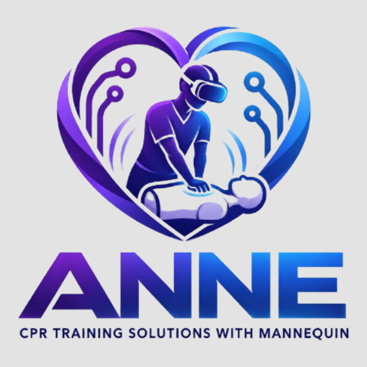
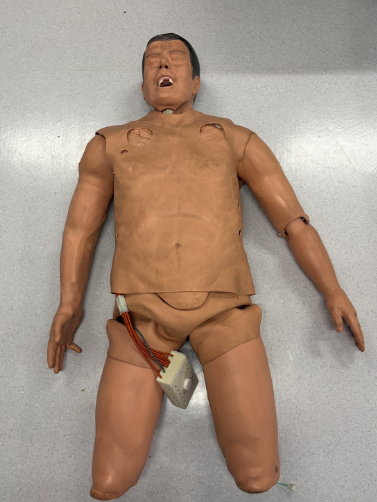
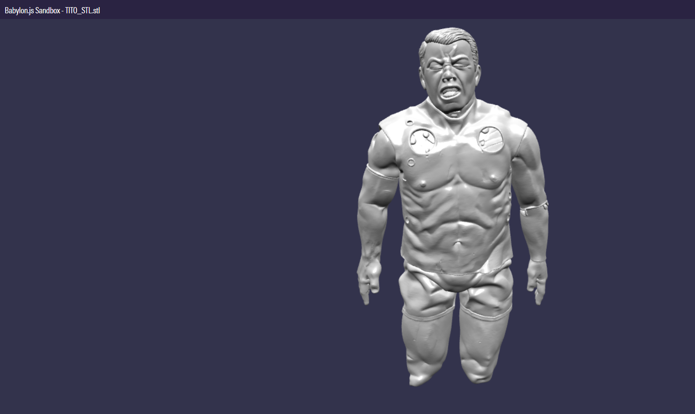

Objetivo
Desarrollar una herramienta de aprendizaje de RCP que combine elementos físicos y virtuales para que el usuario pueda practicar de una manera más dinámica e inmersiva.
PROYECTO FINAL · REALIDAD MIXTA
Aprendizaje y simulación de RCP mediante realidad mixta
ANNE es nuestro proyecto final de la materia de Tecnologías Emergentes. La propuesta busca desarrollar una experiencia de realidad mixta enfocada en el aprendizaje de primeros auxilios, específicamente en la práctica de reanimación cardiopulmonar (RCP).
La idea es combinar un maniquí físico con sensores, al que llamamos Tito, con un entorno desarrollado en Unity. De esta forma buscamos que el usuario pueda practicar físicamente las compresiones mientras recibe información y retroalimentación dentro de una experiencia virtual.

Desarrollar una herramienta de aprendizaje de RCP que combine elementos físicos y virtuales para que el usuario pueda practicar de una manera más dinámica e inmersiva.
El proyecto busca unir la interacción con un objeto físico real, en este caso Tito, con información y escenarios generados digitalmente. Esto permitirá conservar la sensación física de realizar las compresiones mientras el usuario se encuentra dentro de una experiencia virtual.
Antes de comenzar con el desarrollo tecnológico del proyecto realizamos una etapa de preparación para comprender mejor el procedimiento que queremos representar. Como parte de esta etapa tomamos un curso de RCP y practicamos directamente con maniquíes de entrenamiento.
También consultamos material de apoyo y libros de medicina proporcionados por la universidad. Esta investigación nos permitió conocer mejor los fundamentos, la técnica de las compresiones y los elementos principales que posteriormente deberán considerarse dentro de la experiencia de ANNE.
MANIQUÍ DE ENTRENAMIENTO
Para la parte física del proyecto contamos con un maniquí de entrenamiento al que llamamos Tito. Este será uno de los elementos principales de ANNE, ya que sobre él se realizarán físicamente las compresiones durante la experiencia.
Nuestro siguiente objetivo es integrar sensores en el maniquí para obtener información sobre las compresiones realizadas por el usuario. Estos datos podrán utilizarse posteriormente como parte de la retroalimentación de la experiencia.

Maniquí que utilizaremos como interfaz física para realizar las prácticas de RCP e integrar posteriormente los sensores de medición.

Ya contamos con una versión digital de Tito en formato STL. El modelo será utilizado posteriormente dentro de Unity para relacionar el maniquí físico con el entorno virtual.
En esta sección el usuario tendrá apoyo durante la práctica. La finalidad será aprender y familiarizarse con el procedimiento mientras recibe indicaciones y retroalimentación durante la experiencia.
Después del aprendizaje se contará con un modo de simulación en el que el usuario deberá aplicar lo aprendido con una menor cantidad de apoyo.
Para esta parte ya comenzamos a trabajar en un ambiente virtual de hospital, con la intención de generar una situación más inmersiva y añadir la presión de encontrarse frente a una posible emergencia.
ENTORNO VIRTUAL
Como parte del modo de simulación ya comenzamos a desarrollar un escenario de hospital dentro del entorno virtual. Este espacio será utilizado para colocar al usuario dentro de una situación diferente a una práctica guiada tradicional.
La intención es que el entorno contribuya a la sensación de estar enfrentando una emergencia y que posteriormente pueda combinarse con Tito y los datos obtenidos mediante los sensores.
EVIDENCIA DEL PROYECTO
Durante esta etapa documentamos parte de nuestra capacitación y las prácticas realizadas antes de comenzar con la integración tecnológica de ANNE.
Evidencia de la preparación realizada para comprender el procedimiento que utilizaremos como base del proyecto.
Primer acercamiento práctico al entrenamiento de RCP utilizando un maniquí.
Parte de las pruebas y observaciones realizadas durante nuestra preparación para el proyecto.
ESTADO DEL PROYECTO
Actualmente ANNE se encuentra en una etapa de desarrollo en la que ya contamos con las bases tanto del componente físico como del digital. La capacitación en RCP nos permitió conocer mejor la actividad que queremos representar, mientras que Tito, su modelo STL y el escenario de hospital forman la base tecnológica sobre la que continuaremos trabajando.
Las siguientes etapas estarán enfocadas en conectar estos elementos para que el usuario pueda interactuar con un maniquí real mientras visualiza y recibe información dentro de un entorno virtual.